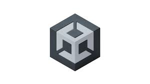
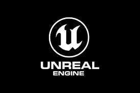
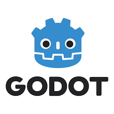

Motores Gráficos para Videojuegos
¿Qué es un motor gráfico?
Un motor gráfico es un software especializado que brinda herramientas y funciones para crear videojuegos sin necesidad de programar desde cero cada uno de los sistemas. Estos motores permiten trabajar con gráficos, animaciones, física, sonidos y lógica del juego, facilitando el desarrollo tanto para principiantes como para estudios profesionales. Gracias a ellos es posible construir mundos tridimensionales, personajes animados, sistemas de iluminación, cámaras, efectos visuales y mecánicas jugables.
Los motores modernos incluyen herramientas visuales, editores de niveles, simuladores de físicas y sistemas de programación, lo que los convierte en una herramienta fundamental dentro de la industria del gaming actual.
Unity
Unity es uno de los motores más populares del mundo, utilizado tanto para proyectos independientes como juegos comerciales. Se destaca por su facilidad de aprendizaje, su amplio soporte en múltiples plataformas y su extensa comunidad. Permite crear juegos en 2D y 3D, así como experiencias interactivas para realidad aumentada y realidad virtual. Su programación se basa principalmente en el lenguaje C# y cuenta con una tienda de recursos donde los desarrolladores pueden obtener modelos, efectos y sistemas listos para usar.

Unreal Engine
Unreal Engine es un motor avanzado utilizado en videojuegos de alta calidad y producciones AAA. Es conocido por su capacidad para generar gráficos realistas y efectos visuales de alto nivel, lo que lo hace ideal para proyectos con altos estándares visuales. Su sistema de programación permite trabajar tanto con C++ como con Blueprints, un método visual que ayuda a crear mecánicas sin escribir código directamente. Además, incluye herramientas potentes para animación, iluminación y simulación realista.

Godot Engine
Godot es un motor de código abierto que ha ganado popularidad por su enfoque simple y su flexibilidad. Es completamente gratuito y ofrece herramientas para el desarrollo de juegos 2D y 3D. Utiliza su propio lenguaje de programación llamado GDScript, pero también soporta C#. Godot es muy valorado por desarrolladores independientes, estudiantes y personas que desean aprender sin depender de licencias comerciales. Su filosofía abierta y su activa comunidad lo convierten en una alternativa fuerte dentro del mundo del desarrollo de videojuegos.

Importancia de elegir un motor
La elección del motor gráfico depende del tipo de juego, los conocimientos del desarrollador y los recursos disponibles. Unity se destaca por su versatilidad, Unreal por su potencia gráfica y Godot por su accesibilidad y filosofía libre. Cada motor tiene ventajas y particularidades, y conocer sus características permite tomar decisiones más acertadas según el proyecto.